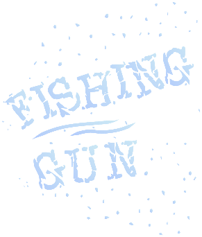
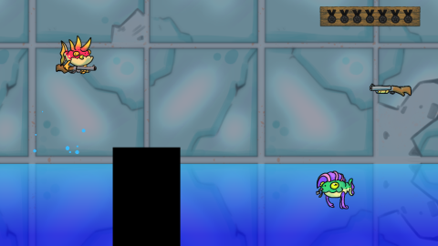
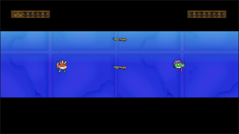
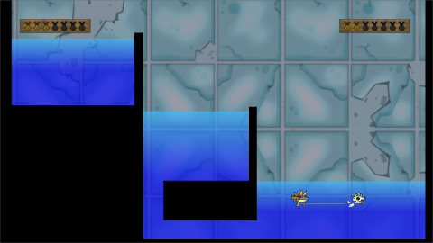

  2 Player battles with punk fishes. Be the first to grab the gun or die an humiliating death. Also don't spend too much time outside the water. Made for Megajam de Invierno II in Mendoza, Argentina.
Controls:
Player 1
- WASD to move & F to shoot(keyboard).
- left Stick to move & A/B/X/Y to shoot(controller)
Player 2
- Arrow keys to move & M to shoot(keyboard).
- left Stick to move & A/B/X/Y to shoot(controller)
Credits:
Agustín Pérez Burgos - Programming
Lautaro Moreno - art
Nicoletta Busto - UI, UX, Design